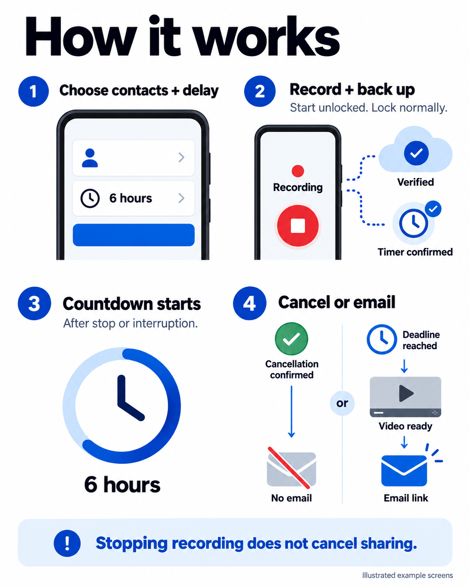

Economy
480p · 15 FPS requested25–30 MB
Smaller uploads. A useful starting point for mobile data.
HEVC: 24.6 MBH.264: 29.9 MB
Android · Private cloud backup · Timed email sharing
Record video and audio. Save clips to private cloud storage as you record. Set a timer to email trusted contacts if you do not cancel.
Android 11 or later. A connection code is needed for cloud access.
Record through screen lockStart with the app open and the phone unlocked.
Upload as you recordShort clips reach the cloud before recording ends.
Share after a delayCancel before the server deadline to prevent automatic email.
01 / How it works
You choose the contacts and release delay in the app. The server manages the confirmed timer.

Cancellation confirmedNo automatic email for that recording.
Deadline reachedThe server attempts email delivery after the combined video is verified.
Release checks run every 20 minutes. Email can follow the deadline by almost 20 minutes, plus processing and provider time.
02 / Install and connect
You will need an Android phone, internet access, and the connection code from the app owner.
The APK download has not been published yet. Ask the app owner for the current installation file.
Android 11 or later. The app currently appears as Evidence Recorder Dev on your phone.
Use the download button or the APK supplied by the app owner. An APK is an Android installation file.
Open the downloaded file. If Android asks, allow installation from that browser or file app, then tap Install.
Settings vary by phone. You can turn off that installation permission afterward. Keep Android security checks enabled.
If Android reports an incompatible update, keep your existing app and contact the app owner. Do not uninstall while recordings or uploads are pending.
Return to your private invitation link or scan its QR code, then tap Connect this phone. Confirm Connect in the app.
You can also open Evidence Recorder Dev, tap Connect this phone and enter your eight-character code. Wait for Phone connected.
Allow the camera and microphone. Allow location if you want location evidence. Follow the app’s notification and battery guidance.
Choose your video quality. For automatic email, save your contacts and release delay. Read the sharing disclosure before enabling it.
03 / Mobile data
These estimates include microphone audio and one active camera at a time, as used by the Galaxy A07.
25–30 MB
Smaller uploads. A useful starting point for mobile data.
HEVC: 24.6 MBH.264: 29.9 MB
40–49 MB
More image detail. Uses more mobile data.
HEVC: 39.6 MBH.264: 48.6 MB
Estimates use the configured video bitrate plus 48 kbps audio. MB means 1,000,000 bytes. Actual use varies with the phone and recording.
The app uses HEVC when the phone passes its encoder check. Otherwise, it uses H.264. Both settings keep microphone audio.
Network overhead and repeated uploads can increase data use. Downloading a combined video uses additional data. Simultaneous front and rear recording on supported phones also uses more data.
04 / Before you need it
Check the camera, microphone, uploads, and readiness results. Make sure you understand the timer controls before relying on them.
A file saved on your phone is not yet a verified cloud copy. Saved email settings are not a confirmed server timer.
Low storage, an empty battery, or Android restrictions can interrupt recording. Follow the app’s battery guidance for your phone.
Do not uninstall the app or clear its data while uploads are pending. Reconnect to the internet to let uploads resume.
05 / Questions
Yes, during normal screen lock. Start recording while the phone is unlocked and the app is visible. Locking does not start a ten-minute stop timer. You can choose a separate maximum duration.
The Galaxy A07 alternates the front and rear cameras every five seconds. Audio continues between views. One view has gaps while the other is active.
Simultaneous recording is available on supported hardware, but it has not been physically qualified on other phones.
The phone can save recordings locally. Pending uploads retry when internet access returns, subject to Android restrictions.
There is no remote timer until the server confirms it. If a timer is already confirmed, a lost connection can cause the server to detect an interruption.
Your private invitation page can check its status without using it. The app checks again when you confirm the connection. Ask the app owner for a new invitation if it has expired or was used by another phone.
Each invitation connects one phone and is valid for 48 hours after creation. Its expiry does not expire a saved phone connection.
Recording stops. Previously finalized clips remain available for upload. After a restart and the first unlock, the app schedules pending uploads. Cameras do not restart automatically.
After Android force-stop, open the app again to resume upload scheduling. The unfinished last clip can be lost.
Recordings upload to private AWS storage. Automatic sharing sends trusted contacts expiring access links. Anyone who receives a forwarded link can use it until access expires.
New automatic-email recordings include an administrator copy after the app discloses it and you accept. Read that disclosure before enabling sharing.
This public webpage contains installation guidance only. It does not access your recordings, connection code, or account credentials.
Your next step